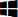

Lock screen
Change lock screen
- Navigate to an image.
- Open the image using the Photos app.
- In the Photos app, open the menu
 and select Set as > Set as lock screen.
and select Set as > Set as lock screen.

To view if an image was applied as the lockscreen, use the keyboard shortcut Windows logo key  + L